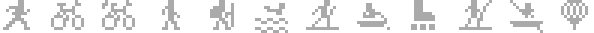

Les données de la montre
Les cadrans affichent des données lues sur la montre, en jauge (barre ou anneau) ou en champ de texte, selon le cadran et vos réglages. Elles sont affichées à titre indicatif ; certaines n'existent que sur certains modèles.
Lire une jauge
- Couleur du thème : progression normale.
- Vert : objectif atteint (la jauge reste pleine si vous le dépassez).
- Rouge : alerte (seuil dépassé, voir chaque donnée).
- Piste grise seule : donnée indisponible, ou pas d'objectif réglé.
- Une jauge n'est jamais tout à fait vide dès qu'une valeur existe : un petit trait reste visible, même à zéro.
- Au-delà de 1 000, les nombres passent en milliers : « 8,2k » pour 8 240 pas.
Les données
| Donnée | Ce qui est affiché | Jauge | |
|---|---|---|---|
 |
Pas | Pas du jour. | Vers l'objectif de pas de la montre. |
 |
Étages | Étages montés dans la journée. | Vers l'objectif d'étages de la montre. |
 |
Minutes intensives | Total de la semaine. | Vers l'objectif hebdomadaire de la montre. |
| Calories | Calories du jour. | (champ de texte seulement) | |
 |
Fréquence cardiaque | Pendant une activité : la valeur en direct. Sinon : la dernière mesure valide des 10 dernières minutes. | De votre FC de repos à votre FC max, découpée selon vos zones. Rouge en zone 5. |
 |
Body Battery | Niveau, en %. | 0 à 100 %. Un trait blanc marque le maximum du jour. Rouge à 5 % ou moins. |
 |
Stress | Indice de 0 à 100. | En quatre paliers. Rouge à partir de 75. |
 |
Récupération | Heures de récupération restantes ; « Ok » quand vous êtes récupéré. | Pleine et verte quand vous êtes récupéré. Échelle réglable (48 h par défaut). Rouge au-delà de l'échelle. |
 |
Sport | Cumul de vos activités : distance, durée ou nombre de séances, sur la semaine, le mois ou l'année, pour un sport ou tous. | Vers l'objectif que vous réglez, dans l'unité de la montre (km ou mi, heures, séances). |
| Batterie | Charge en %, ou autonomie estimée par la montre (en heures sous 48 h, en jours au-delà). | Rouge sous le seuil réglé (20 % par défaut), vert pendant la charge. | |
 |
Notifications | Nombre de notifications en attente. | (champ de texte seulement) |
Sports disponibles pour la jauge Sport : course, vélo, vélo électrique, marche, randonnée, natation, ski de fond, aviron, roller, paddle, kayak, raquettes, ou tous les sports.

Quand sont-elles relues ?
- Chaque minute, et au poignet levé : pas, étages, minutes intensives, calories, Body Battery, stress, batterie, notifications.
- Chaque seconde tant que l'écran est allumé après un geste : la fréquence cardiaque.
- Toutes les 15 minutes : la jauge de récupération (en champ de texte : chaque minute).
- Toutes les heures, au démarrage du cadran et au changement de jour : les cumuls Sport.
Bon à savoir
- Sport : les cumuls viennent de l'historique d'activités de la montre, que le cadran mémorise au fil du temps. Le jour de l'installation, il connaît les activités des 40 derniers jours ; le cumul de l'année se complète ensuite avec toutes les nouvelles activités.
- Body Battery : le maximum du jour est suivi par le cadran. Le jour de l'installation, le pic du matin n'est connu que s'il est encore dans l'historique récent de la montre.
- Stress et Body Battery affichent la dernière valeur valide de l'heure écoulée : la montre ne les calcule pas en continu (montre retirée, activité en cours).
- « -- » : la donnée n'est pas encore disponible, ou votre modèle ne la fournit pas.